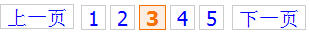

正文标签使用说明
本文说明了正文标签的语法、用途和使用情境。
注意，对于自定义数据源的栏目：
1.以下正文标签中仅<$art_id$>、<$art_title$>、<$art_url$>、<$art_createdate$>和<$art_publishdate$>有效，其他正文标签如果被引用值都为NULL。
2.其他字段的用法，请参照RS标签说明。
从V1.5 开始支持文章内容的分页。目前有FCKEditor格式的分页符和NPS格式的分页符。全部使用小写字母：
FCKEditor的分页符：<div style="page-break-after: always"><span style="display: none"> </span></div>
NPS的分页符：<!--pagebreak-->
如果文章正文中输入了以上分页符，一旦在文章模板中出现<$art_content$>字段，系统将自动分页。
注意，对于页面模板中出现的<$art_content$>以及任意的<$art_content(wordcount:int,append:String)$>格式化正文内容的串，系统不会分页。
分页导航样式默认使用onebyone样式，可以参照RS语句分页说明。

可以通过在文章模板中调用SetPageBreakStyle4Content(String style)函数设置分页样式。下面演示如何通过在文章模板中嵌入JAVA语句设置为modern样式：
<%
SetPageBreakStyle4Content("modern");
%>
 <$art_id$>
<$art_id$>- <$art_url$>
- <$art_title$>
- <$art_subtitle$>
- <$art_abtitle$>
- <$art_author$>
- <$art_source$>
- <$art_tag$>
- <$art_imgurl$>
- <$art_validdays$>
- <$art_important$>
- <$art_creator$>
- <$art_publishdate$>
- <$art_createdate$>
- <$art_previd$>
- <$art_prevtitle$>
- <$art_prevurl$>
- <$art_prevtopic$>
- <$art_prev$>
- <$art_nextid$>
- <$art_nexttitle$>
- <$art_nexturl$>
- <$art_next$>
- <$art_abstract$>
- <$art_content$>

<$art_id$>
文章唯一标识号。
<$art_title(wordcount:int,append:String)$>
| 参数名 | 类型 | 含义 |
|---|---|---|
| wordcount | int | 可选。指明取的字数。中文算1个字符。 |
| append | String | 可选。超出wordcount个字符后，自动在后面追加append串。 |
文章标题。
<$art_title$>：返回整个标题。
<$art_title(50)$>：标题中50以上的将被截断，仅返回标题中的前50个字符。等同于<$art_title(50,"")$>
<$art_title(50,"...")$>：标题中50以上的将被截断，返回前50个字符，并在末尾追加...
<$art_subtitle(wordcount:int,append:String)$>
| 参数名 | 类型 | 含义 |
|---|---|---|
| wordcount | int | 可选。指明取的字数。中文算1个字符。 |
| append | String | 可选。超出wordcount个字符后，自动在后面追加append串。 |
文章副标题。
<$art_subtitle$>：返回整个副标题。
<$art_subtitle(50)$>：副标题中50以上的将被截断，仅返回副标题中的前50个字符。等同于<$art_subtitle(50,"")$>
<$art_subtitle(50,"...")$>：副标题中50以上的将被截断，返回前50个字符，并在末尾追加...
<$art_abtitle(wordcount:int,append:String)$>
| 参数名 | 类型 | 含义 |
|---|---|---|
| wordcount | int | 可选。指明取的字数。中文算1个字符。 |
| append | String | 可选。超出wordcount个字符后，自动在后面追加append串。 |
短标题。
<$art_abtitle$>：返回整个短标题。
<$art_abtitle(50)$>：短标题中50以上的将被截断，仅返回短标题中的前50个字符。等同于<$art_abtitle(50,"")$>
<$art_abtitle(50,"...")$>：短标题中50以上的将被截断，返回前50个字符，并在末尾追加...
<$art_url$>
发布后文章绝对路径。
<$art_author$>
文章作者。
<$art_source(wordcount:int,append:String)$>
| 参数名 | 类型 | 含义 |
|---|---|---|
| wordcount | int | 可选。指明取的字数。中文算1个字符。 |
| append | String | 可选。超出wordcount个字符后，自动在后面追加append串。 |
文章来源/出处。
<$art_source$>：返回文章来源/出处。
<$art_source(50)$>：文章来源中50以上的将被截断，仅返回文章来源中的前50个字符。等同于<$art_source(50,"")$>
<$art_source(50,"...")$>：文章来源中50以上的将被截断，返回前50个字符，并在末尾追加...
<$art_imgurl$>
导读图片。
<$art_tag(wordcount:int,append:String)$>
| 参数名 | 类型 | 含义 |
|---|---|---|
| wordcount | int | 可选。指明取的字数。中文算1个字符。 |
| append | String | 可选。超出wordcount个字符后，自动在后面追加append串。 |
Tag分类标签。
<$art_tag$>：返回Tag。
<$art_tag(50)$>：Tag中50以上的将被截断，仅返回关键字中的前50个字符。等同于<$art_tag(50,"")$>
<$art_tag(50)$>：Tag中50以上的将被截断，返回前50个字符，并在末尾追加...
<$art_validdays$>
有效期。返回值为天数（整数）。0表示长期有效。
<$art_important$>
文章重要度。返回值为整数，0表示一般，1表示重要，2表示非常重要。
<$art_creator$>
创建人ID号。
<$art_creatorcn$>
创建人姓名。
<$art_creatorfn$>
创建人全称。格式为：姓名（部门名/单位名）。
<$art_publishdate(format:string)$>
| 参数名 | 类型 | 含义 |
|---|---|---|
| format | String | 可选。日期格式串，默认为yyyy-MM-dd。 |
发布日期。format可以使用以下参数进行组合：
|
字母
|
日期或时间元素
|
表示
|
示例
|
|
G
|
Era 标志符
|
Text
|
AD
|
|
y
|
年
|
Year
|
1996; 96
|
|
M
|
年中的月份
|
Month
|
July; Jul; 07
|
|
w
|
年中的周数
|
Number
|
27
|
|
W
|
月份中的周数
|
Number
|
2
|
|
D
|
年中的天数
|
Number
|
189
|
|
d
|
月份中的天数
|
Number
|
10
|
|
F
|
月份中的星期
|
Number
|
2
|
|
E
|
星期中的天数
|
Text
|
Tuesday; Tue
|
|
a
|
Am/pm 标记
|
Text
|
PM
|
|
H
|
一天中的小时数（0-23）
|
Number
|
0
|
|
k
|
一天中的小时数（1-24）
|
Number
|
24
|
|
K
|
am/pm 中的小时数（0-11）
|
Number
|
0
|
|
h
|
am/pm 中的小时数（1-12）
|
Number
|
12
|
|
m
|
小时中的分钟数
|
Number
|
30
|
|
s
|
分钟中的秒数
|
Number
|
55
|
|
S
|
毫秒数
|
Number
|
978
|
|
z
|
时区
|
General time zone
|
Pacific Standard Time; PST; GMT-08:00
|
|
Z
|
时区
|
RFC 822 time zone
|
-0800
|
- Text:对于格式化来说，如果模式字母的数量大于或等于 4，则使用完全形式；否则，在可用的情况下使用短形式或缩写形式。对于分析来说，两种形式都是可接受的，与模式字母的数量无关。
- Number:对于格式化来说，模式字母的数量是最小的数位，如果数位不够，则用 0 填充以达到此数量。对于分析来说，模式字母的数量被忽略，除非必须分开两个相邻字段。
- Year:对于格式化来说，如果模式字母的数量为 2，则年份截取为 2 位数,否则将年份解释为 number。
- Month:如果模式字母的数量为 3 或大于 3，则将月份解释为 text；否则解释为 number。
<$art_createdate(format:string)$>
| 参数名 | 类型 | 含义 |
|---|---|---|
| format | String | 可选。日期格式串，默认为yyyy-MM-dd。 |
创建日期。format格式参见art_publishdate标签。
<$art_previd$>
上一篇文章ID号。null表示没有
<$art_prevtitle$>
上一篇文章标题。null表示没有
<$art_prevurl$>
上一篇文章URL路径。null表示没有
<$art_prevtopic$>
上一篇文章栏目。null表示没有。可以通过引用全局标签获得上级栏目的值。
例如：
<$art_prevtopic.top_name$>表示上级栏目的名称
<$art_prev$>
上一篇文章。null表示没有。可以通过引用文章标签进一步获得该文章的其他值。
例如：
<$art_prev.art_publishdate$>表示上一篇文章的发布日期。
注意：<$art_previd$>=<$art_prev.art_id$>，但是速度更快，因为<$art_prev$>将加载上一篇文章所有内容。
<$art_prevtitle$>、<$art_prevurl$>也是同理。
<$art_nextid$>
下一篇文章ID号。null表示没有
<$art_nexttitle$>
下一篇文章标题。null表示没有
<$art_nexturl$>
下一篇文章URL路径。null表示没有
<$art_nexttopic$>
下一篇文章栏目。null表示没有。可以通过引用全局标签获得上级栏目的值。
例如：
<$art_nexttopic.top_name$>表示上级栏目的名称
<$art_next$>
下一篇文章。null表示没有。可以通过引用文章标签进一步获得该文章的其他值。
例如：
<$art_next.art_publishdate$>表示下一篇文章的发布日期。
注意：<$art_nextid$>=<$art_next.art_id$>，但是速度更快，因为<$art_next$>将加载下一篇文章所有内容。
<$art_nexttitle$>、<$art_nexturl$>也是同理。
<$art_abstract$>
摘要。如果文章没有设置摘要，那么<$art_abstract$>等于<$art_content("flat",90,"...")$>;
<$art_content(format:string,wordcount:int,append:string)$>
| 参数名 | 类型 | 含义 |
|---|---|---|
| format | String |
可选。foarmat="0" 或 format="text"，表示格式化后的纯文本。 format不填，表示取HTML格式文本 |
| wordcount | int |
可选。指明取的字数。中文算1个字符。 |
| append | String | 可选。超出wordcount个字符后，自动在后面追加append串。 |
正文内容。
<$art_content$>：返回HTML标记的整个正文
<$art_content("flat")$>：将返回忽略script、title、head、link、style标签的纯文本。
<$art_content("flat",200)$>：返回正文的纯文本的前200个字。等同于<$art_content(200)$>或<$art_content("flat",200,"")$>
<$art_content("flat",200,"...")$>：返回正文的纯文本的前200个字，超出部分补...
<$art_content(wordcount:int,append:string)$>
| 参数名 | 类型 | 含义 |
|---|---|---|
| wordcount | int | 可选。指明取的字数。中文算1个字符。当指明wordcount时，总是自动计算格式化后的纯文本的字数。 |
| append | String | 可选。超出wordcount个字符后，自动在后面追加append串。 |
正文内容。
<$art_content$>：返回HTML标记的整个正文
<$art_content(50)$>：将返回不超过50个字符的忽略script、title、head、link、style标签后的纯文本。一个中文算一个字符。等同于<$art_content(50,"")$>
<$art_content(50,"...")$>：返回正文的纯文本的前50个字，超出部分补...